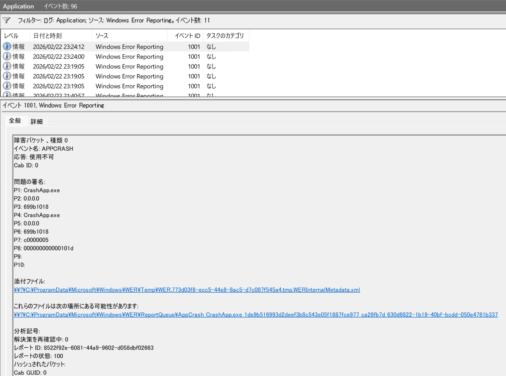
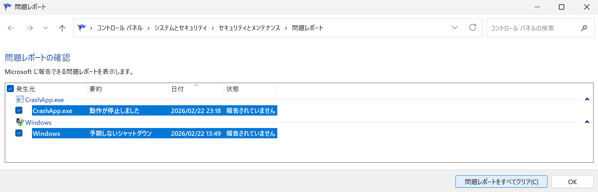
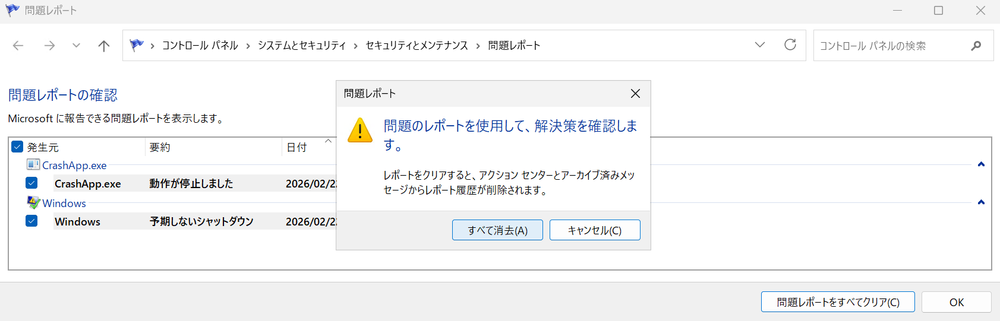

本記事は、マイクロソフト社員によって公開されております。
こんにちは、Windows サポートチームの岩永です。
本記事では Windows Error Reporting (WER) のイベント ID: 1001 のイベントについてご案内いたします。
■ 概要
アプリケーション イベントログに Windows Error Reporting (WER) のイベント ID: 1001 が定期的に記録されることがあります。
本イベントは、過去に発生した問題をレポートできない場合に記録されるイベントであり、記録された日時にはクラッシュなどの問題が発生していないため無視して差し支えありません。
また、問題のレポートをクリアすることで、当該イベントの記録を抑制できる場合があります。
■ 事象
イベントの例
アプリケーション イベントログに、以下のようなイベントが定期的に記録されることがあります。
- イベント ソース: Windows Error Reporting
- イベント ID: 1001
- レベル: 情報

事象の詳細
アプリケーションのクラッシュなどが発生した場合に、Windows Error Reporting (WER) が「問題のレポート」を作成し、Microsoft への送信を試みることがあります。
この際、ネットワーク到達性の問題や通信のブロックなどが影響し送信が完了しない場合、問題のレポートが報告されていない状態となります。このような未報告のレポートがある場合、起動時などで再送を試行します。
この再送が完了しないとイベント ID 1001 が記録されるため、通信のブロックなどで継続に未報告の状態のままになると定期的に該当イベントが記録されることとなります。
ただし、本イベントのレベルは “情報” であり、Windows Error Reporting (WER) の イベント ID: 1000 と異なり、アプリケーションやシステムに異常があることを示すものではありません。
そのため、本イベントは無視して差し支えありません。
■ 対処策について
本イベントの記録を抑制する方法として、問題のレポートをクリアする方法があります。
以下の手順により、クリアし、イベントが抑制されるかご確認ください。
- タスクバーの [検索] ボックスに [問題のレポートをすべて表示] と入力し、起動します。
- 発生元を選択し、[問題レポートをすべてクリア] をクリックします。

- [すべて消去] をクリックします。

関連記事
アプリケーションまたはサービスのクラッシュ動作のトラブルシューティング ガイダンス - Windows Server | Microsoft Learn
https://learn.microsoft.com/ja-jp/troubleshoot/windows-server/performance/troubleshoot-application-service-crashing-behavior
Windows エラー報告と Windows 診断の有効化に関するガイダンス - Windows Client | Microsoft Learn
https://learn.microsoft.com/ja-jp/troubleshoot/windows-client/system-management-components/windows-error-reporting-diagnostics-enablement-guidance
WER について - Win32 apps | Microsoft Learn
https://learn.microsoft.com/ja-jp/windows/win32/wer/about-wer
修正履歴
- 2026.03.25 本ブログを公開
本情報の内容 (添付文書、リンク先などを含む) は、作成日時点でのものであり、予告なく変更される場合があります。